1. Bậc 1 — Chiến Binh (Warrior • Cấp 1)
26 Kỹ Năng Gốc Hệ KiếmMột chiến binh mạnh mẽ với HP và DEF cao, chịu được những đòn đánh nặng trong khi vẫn xuất sắc trong việc truy đuổi cận chiến và chặn đòn phản công.


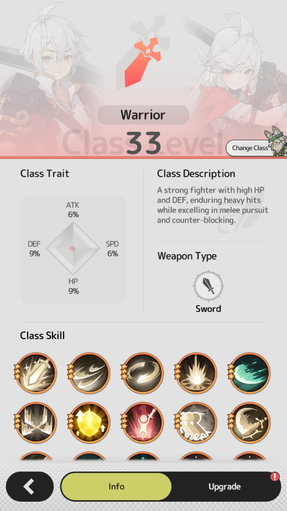
Bảng Chiến Kỹ Chủ Động — Chiến Binh (Warrior Techniques) (13 kỹ năng)
| Icon | Tên Kỹ Năng | Phân Loại Tag | Mô Tả Cơ Chế Thực Chiến Chính Thức Trong Game |
|---|---|---|---|
| Heavy Impact | Sát Thương | Tấn công 1 kẻ địch trong phạm vi 1 ô quanh người thi triển, gây Sát Thương Vật Lý 1 lần và hất tung chúng (Ưu tiên mục tiêu lớn). | |
| Lion Combo | Sát Thương | Gây Sát Thương Vật Lý 3 lần lên 1 kẻ địch trong phạm vi 1 ô quanh người thi triển. | |
| Whirlwind Slash | Sát Thương | Gây Sát Thương Vật Lý 4 lần lên tất cả kẻ địch trong khu vực hình vuông 1 ô quanh người thi triển. | |
| Mountain Collapse | Sát Thương, Đẩy Lùi | Gây Sát Thương Vật Lý 1 lần lên tất cả kẻ địch trong phạm vi 2 ô quanh người thi triển, hất tung chúng, với 60% tỉ lệ cơ bản đẩy lùi chúng 1 ô. | |
| Wind Blade Slash | Sát Thương, Đẩy Lùi | Gây Sát Thương Gió 1 lần lên tất cả kẻ địch trong khu vực 1×4 ô phía trước người thi triển, với 50% tỉ lệ cơ bản đẩy lùi chúng 1 ô. | |
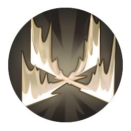 |
Quadrant Slash | Sát Thương | Gây Sát Thương Vật Lý 1 lần lên tất cả kẻ địch trong phạm vi 1 ô quanh người thi triển. |
| Luminous Shield | Tự Buff | Tăng Tỉ Lệ Chặn và Hiệu Quả Chặn của người thi triển trong 3 lượt. (Không có hồi chiêu ban đầu) | |
| Boiling Bloodlust | Tự Thân, Buff | Tăng Tỉ Lệ Chí Mạng và Sát Thương Chí Mạng. | |
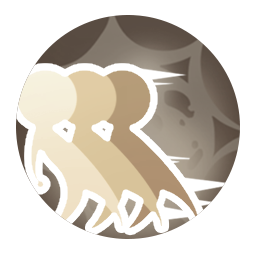 |
Phantom Assault | Sát Thương, Di Chuyển | Gây Sát Thương Vật Lý 1 lần lên 1 kẻ địch trong phạm vi 1 ô quanh người thi triển, sau đó lùi lại 3 ô. |
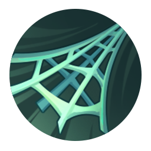 |
Gravity Pull | Kéo | Chọn 1 ô trong phạm vi 7 ô quanh người thi triển. Gây Sát Thương Gió 1 lần lên tất cả kẻ địch trong khu vực hình vuông 1 ô quanh ô mục tiêu và kéo chúng về vị trí của người thi triển. |
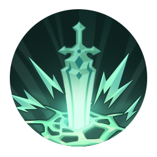 |
Diving Gale | Sát Thương | Chọn 1 ô trong phạm vi 4 ô quanh người thi triển. Gây Sát Thương Gió 1 lần lên tất cả kẻ địch trong hình vuông 1 ô quanh ô mục tiêu. |
| Edge Strike | Sát Thương | Gây Sát Thương Vật Lý 1 lần lên 1 kẻ địch trong phạm vi 1 ô quanh người thi triển. | |
| Leap Attack | Di Chuyển, Sát Thương, Debuff | Nhảy tới bất kỳ ô trống nào trong phạm vi 3 ô quanh người thi triển, gây Sát Thương Vật Lý 1 lần lên tất cả kẻ địch trong phạm vi 1 ô quanh người thi triển, với 50% tỉ lệ cơ bản gây Phá Giáp 2 trong 2 lượt. |
Bảng Bí Thuật Bị Động — Chiến Binh (Warrior Charms) (13 kỹ năng)
| Icon | Tên Kỹ Năng | Phân Loại Tag | Mô Tả Cơ Chế Thực Chiến Chính Thức Trong Game |
|---|---|---|---|
| Insightful Eye | Chỉ Số | Tăng Thông Thạo Nguyên Tố của người thi triển. | |
| Counter Blade | Phản Công | Tăng Sát Thương Gió của người thi triển. | |
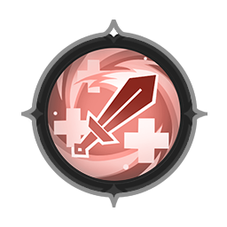 |
Blade of Lament | Hồi Máu | Tăng Sát Thương Nước của người thi triển. |
| Iron Fortress | Đồng Minh, Buff | Tăng Sát Thương Lửa của người thi triển. | |
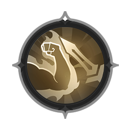 |
Block Awareness | Chỉ Số | Khi Kỹ Thuật của người thi triển gây sát thương lên kẻ địch, có 25% tỉ lệ kích hoạt Aura, gây thêm Sát Thương Gió 1 lần, với 60% tỉ lệ cơ bản đẩy lùi chúng 1 ô. |
| Strength Rules | Chỉ Số | Tăng Kháng Nguyên Tố của người thi triển. | |
| Pure Protection | Khiên | Với mỗi trạng thái bất lợi hoặc debuff mà mục tiêu đang mang, Sát Thương Kỹ Thuật mà người thi triển gây lên mục tiêu đó tăng lên. Cộng dồn tối đa 3 lần. | |
| Relentless Frenzy | Buff | Tăng Tỉ Lệ Trúng Hiệu Ứng của người thi triển. | |
| Crystal Armor | Chỉ Số | Tăng HP của người thi triển. | |
| Life Blessing | Chỉ Số | Khi người thi triển bắt đầu di chuyển trong lượt của mình, có 30% tỉ lệ gây Thiêu Đốt lên các ô trong phạm vi 1 ô quanh người thi triển. | |
| Feline Dance | Chỉ Số | Tăng Sát Thương Nước của người thi triển. | |
 |
Warrior's Essence | Chỉ Số | Tăng Tỉ Lệ Chí Mạng của người thi triển. |
| Blade Tempest | Sát Thương | Ban một khiên dựa trên HP tối đa của người thi triển khi bắt đầu trận đấu. Khi khiên biến mất, gây Sát Thương Gió 1 lần lên tất cả kẻ địch trong khu vực hình vuông 1 ô quanh người thi triển, với 100% tỉ lệ cơ bản đẩy lùi chúng 1 ô. |
2. Bậc 2 — Đấu Sĩ (Duelist • Cấp 44 Cinder Ridge)
11 Kỹ Năng Chuyên Biệt Bậc 2Một lớp nhân vật chiến đấu với cơn thịnh nộ của lốc xoáy — nhanh như chớp, xâm lấn như lửa, và là bậc thầy áp chế kẻ địch bằng sự hung hãn không ngừng nghỉ. Họ tiên phong đột phá tuyến đầu, thống trị chiến trường bằng nhịp tấn công dữ dội, càng đánh giáp lá cà càng trở nên đáng gờm. Đấu Sĩ (Duelist) giống như một con thú săn mồi trên chiến trường, không hề sợ hãi trước nỗi đau. Với khả năng hồi phục vượt trội, họ có thể nhanh chóng ổn định tình trạng trong những trận giao tranh khốc liệt. Ngay cả khi bị thương nặng, họ vẫn dựa vào ý chí bất khuất để tung đòn phản công liều lĩnh và giành chiến thắng từ tay thất bại. Hãy tận hưởng cảm giác hồi hộp khi nhảy múa trên lưỡi kiếm, và nghiền nát hàng ngũ địch bằng một đợt tấn công áp đảo!


Bảng Chiến Kỹ Chủ Động — Đấu Sĩ (Duelist Techniques) (6 kỹ năng)
| Icon | Tên Kỹ Năng | Phân Loại Tag | Mô Tả Cơ Chế Thực Chiến Chính Thức Trong Game |
|---|---|---|---|
 |
Sunset Sword | Sát Thương | Gây Sát Thương Vật Lý 5 lần lên tất cả kẻ địch trong khu vực 3x2 ô phía trước người thi triển. |
| Darkness Descends | Di Chuyển, Sát Thương, Giải Trừ | Nhảy tới bất kỳ ô trống nào trong phạm vi 5 ô quanh người thi triển. Gây Sát Thương Bóng Tối 1 lần lên 1 kẻ địch trong phạm vi 1 ô quanh người thi triển và giải trừ ngẫu nhiên 1 buff. (Ưu tiên mục tiêu lớn) | |
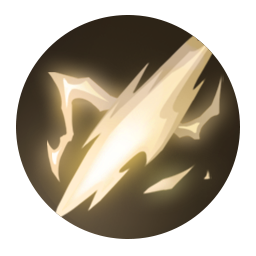 |
Flash Dash | Di Chuyển, Sát Thương | Lao thẳng 5 ô theo đường thẳng, gây Sát Thương Vật Lý Doom 1 lần lên tất cả kẻ địch trong khu vực 1x4 ô dọc đường đi. (Không thể xuyên qua kẻ địch lớn hơn 4 ô) |
 |
Shattering Sigil | Debuff | Tấn công 1 kẻ địch trong phạm vi 1 ô quanh người thi triển, gây Sát Thương Lửa 1 lần và gây Ấn (Sigil). (Ưu tiên mục tiêu lớn) |
| Fire Slash | Sát Thương | Gây Sát Thương Lửa Doom 1 lần lên tất cả kẻ địch trong khu vực 3x2 ô phía trước người thi triển. | |
 |
Flame Aura | Đồng Minh, Buff, Sát Thương | Ban Lửa (Flame) cho người thi triển và 3 đồng minh ngẫu nhiên trong phạm vi 3 ô quanh người thi triển trong 2 lượt. Hiệu ứng này không thể bị giải trừ. |
Bảng Bí Thuật Bị Động — Đấu Sĩ (Duelist Charms) (5 kỹ năng)
| Icon | Tên Kỹ Năng | Phân Loại Tag | Mô Tả Cơ Chế Thực Chiến Chính Thức Trong Game |
|---|---|---|---|
| Indomitable Will | Buff, Hồi Máu | Khi lần đầu tiên nhận sát thương chí mạng, sống sót với 1 HP, tiến vào trạng thái Bất Khuất (Indomitable) trong 2 lượt (không thể bị giải trừ), và hồi máu cho người thi triển 1 lần. | |
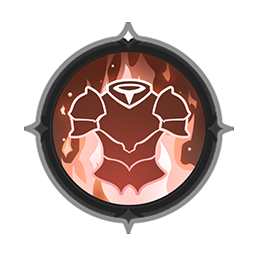 |
Frame of Battles | Buff | Giảm sát thương người thi triển phải chịu với mỗi 15% HP đã mất. Hiệu ứng này cộng dồn tối đa 5 lần và không thể bị giải trừ. |
 |
Blazing Clash | Buff | Tăng sát thương người thi triển gây ra với mỗi 4 Kỹ Thuật đã dùng. Cộng dồn tối đa 3 lần. |
 |
Crit Mastery | Chỉ Số | Tăng Sát Thương Chí Mạng của người thi triển. |
 |
Potential Vitality | Buff | Tăng lượng hồi máu người thi triển nhận được với mỗi 15% HP đã mất. Hiệu ứng này cộng dồn tối đa 5 lần và không thể bị giải trừ. |
3. Bậc 3 → Bậc 7 — Cuồng Chiến (Berserker • Lv.82) → Chinh Phục → Tàn Sát → Ma Kiếm
Dữ Liệu Đã Hiệu Chuẩn Thực ChiếnHãy để những đòn tấn công cuồng nộ của bạn trở thành tấm khiên, nghiền nát ý chí chiến đấu của kẻ địch! Dưới đây là danh sách kỹ năng chuyên biệt Bậc 3–7 đã được đối chiếu và hiệu chuẩn chính xác cho nhánh Kiếm Công (xem toàn bộ kho kỹ năng tại Kho 125 Kỹ Năng):
Bảng Chiến Kỹ Chủ Động Bậc 3–7 — Cuồng Chiến / Chinh Phục / Tàn Sát / Ma Kiếm (14 kỹ năng)
| Icon | Tên Kỹ Năng | Phân Loại Tag | Mô Tả Cơ Chế Thực Chiến Chính Thức Trong Game |
|---|---|---|---|
 Flickering Blade" class="skill-wiki-icon" loading="lazy" /> Flickering Blade" class="skill-wiki-icon" loading="lazy" /> |
Lưỡi Kiếm Chập Chờn Flickering Blade |
Bậc 3–5 • Lửa • T0.5 | [CD 1 • Cận chiến 1 ô] Tốc kích hỏa kiếm cực nhanh vào mục tiêu trong tầm 1 ô, công cụ cưa máu Boss cốt lõi của Chinh Phục Giả và Tàn Sát Giả. |
| Blade Storm" class="skill-wiki-icon" loading="lazy" /> | Bão Kiếm Càn Quét Blade Storm |
Bậc 4 • Gió • T0.5 | [CD 1 • Đường 1×4 (3 hit)] Phóng 3 đợt kiếm phong xuyên suốt dải 1×4 ô trước mặt với hồi chiêu chỉ 1 lượt, dọn sạch hành lang quái phụ bản. |
| Flash Fire" class="skill-wiki-icon" loading="lazy" /> | Hỏa Tốc Khởi Kích Flash Fire |
Bậc 4 • Lửa • T0.5 | [CD đầu 0 • Lao mở màn] Không tốn hồi chiêu đầu trận — luôn đặt ở Ô #1 của Chinh Phục Giả để lao vào kích hoạt ngay Hào Quang Rực Lửa. |
| Shattering Dance" class="skill-wiki-icon" loading="lazy" /> | Vũ Điệu Nghiền Nát Shattering Dance |
Bậc 5 • Vật Lý • T0.5 | [CD 1 • Áp sát Bậc 5] Kỹ năng đột kích áp lực cao của Tàn Sát Giả dùng phá vỡ đội hình tuyến sau trong PvP và Boss. |
 Asura's Grasp" class="skill-wiki-icon" loading="lazy" /> Asura's Grasp" class="skill-wiki-icon" loading="lazy" /> |
Trảo A Tu La Asura's Grasp |
Bậc 3 • Bóng Tối • T1 | [CD 1 • Cường hóa đòn kế] Biến Chiến Kỹ gây sát thương tiếp theo thành Sát Thương Hủy Diệt (Doom DMG) kèm phần trăm khuếch đại lớn. |
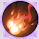 Shadow End / Night Curse" class="skill-wiki-icon" loading="lazy" /> |
Ám Chung Kết & Lời Nguyền Đêm Shadow End / Night Curse |
Bậc 5 • Bóng Tối • T1 | [CD 1–2 • Kết liễu Bậc 5] Biến thể Bóng Tối của Tàn Sát Giả dùng quét phòng quái dày và dứt điểm mục tiêu thấp máu. |
 Doom Blade / Eclipse Slash" class="skill-wiki-icon" loading="lazy" /> Doom Blade / Eclipse Slash" class="skill-wiki-icon" loading="lazy" /> |
Đao Hủy Diệt & Trảm Nhật Thực Doom Blade / Eclipse Slash |
Bậc 3–4 • Bóng Tối • T1 | [CD 1–2 • Nhảy 5 ô Phá Giáp / 6 hit đơn] Bộ đôi Chiến Kỹ Cam Bậc 3 của Cuồng Chiến: Doom Blade nhảy 5 ô hất tung kèm 50% Phá Giáp II; Eclipse Slash chém liên hoàn 6 đòn Vật Lý đơn mục tiêu. |
| Air Break" class="skill-wiki-icon" loading="lazy" /> | Phá Không Trảm Air Break |
Bậc 3–5 • Gió • T2 | [CD 1 • Áp sát tầm trung] Kỹ năng thu hẹp khoảng cách nhanh, tái sử dụng rất mạnh trong bộ combo Tàn Sát Giả Bậc 5. |
| Hellfire Fist" class="skill-wiki-icon" loading="lazy" /> | Ngục Hỏa Chi Quyền Hellfire Fist |
Bậc 6 • Lửa • T0 | [CD 1 • Đa hit + Đẩy lùi] Tung liên hoàn quyền hỏa ngục vào Boss khổng lồ (Thánh Thú / Xâm Lăng Hỗn Mang); cực mạnh khi kết hợp Dục Huyết Cuồng Nhiên. |
| Shadowbind Pull" class="skill-wiki-icon" loading="lazy" /> | Ảnh Ngục Khiên Phược Shadowbind Pull |
Bậc 6 • Bóng Tối • T0.5 | [CD 2 • Kéo gom 2 ô + Suy Yếu] Phiên bản nâng cấp của Lực Hút Trọng Trường: vừa kéo toàn bộ quái trong bán kính 2 ô lại sát chân vừa gắn Suy Yếu. |
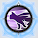 Blade Rain Tempest" class="skill-wiki-icon" loading="lazy" /> |
Kiếm Vũ Cuồng Tập Blade Rain Tempest |
Bậc 6 • Vật Lý • T0.5 | [CD 1 • Đa hit theo Tốc Độ] Bản nâng cấp trực tiếp của Kiếm Hoàng Hôn: Tốc Độ (SPD) càng cao thì số đợt kiếm mưa giáng xuống càng nhiều, tích nội tại siêu tốc! |
| Inferno Sever / Scorch Flash" class="skill-wiki-icon" loading="lazy" /> | Tuyệt Viêm Trảm / Chước Viêm Thiểm Tập Inferno Sever / Scorch Flash |
Bậc 6–7 • Lửa • T0.5 | [CD 1 • Phá Khiên + Lướt thu hoạch] Đòn chém phá hủy khiên chắn của Đền Thánh Kỵ Sĩ và tự lướt dọn nốt quái ít máu. |
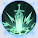 Starfall Annihilation / Shadow Wing Finale" class="skill-wiki-icon" loading="lazy" /> |
Tinh Vẫn Tẫn Diệt / Ảnh Dực Chung Kết Starfall Annihilation / Shadow Wing Finale |
Bậc 7 • Bóng Tối • T0 | [CD 1 • Tự khóa mục tiêu thấp máu] Tuyệt kỹ thu hoạch Bậc 7 tự động khóa vào mục tiêu còn ít HP nhất kết hợp hiệu ứng lan sát thương. |
| Sin-Cleaver Seal" class="skill-wiki-icon" loading="lazy" /> |
Đoạn Tội Ma Ấn Sin-Cleaver Seal |
Bậc 6 • Bóng Tối • T1 | [CD 2 • Gắn Dễ Tổn Thương + Nổ trễ] Khắc Ma Ấn gây hiệu ứng Mỏng Manh lên Boss và kết toán nổ toàn bộ tổng sát thương tích lũy khi ấn hết hạn. |
Bảng Bí Thuật Bị Động Bậc 3–7 — Cuồng Chiến / Chinh Phục / Tàn Sát / Ma Kiếm (11 kỹ năng)
| Icon | Tên Kỹ Năng | Phân Loại Tag | Mô Tả Cơ Chế Thực Chiến Chính Thức Trong Game |
|---|---|---|---|
| Piercing Assault" class="skill-wiki-icon" loading="lazy" /> | Xuyên Giáp Công Kích Piercing Assault |
Bậc 4 • Vật Lý • T0 | [Nội tại Cam • Tối đa 3 tầng] Mỗi khi Chiến Kỹ gây ST sẽ bỏ qua DEF mục tiêu, tăng thêm +10% bỏ qua DEF với mỗi Buff đang có trên người (tối đa 3 tầng) — đánh như sát thương chuẩn! |
| Tactical Adaptation" class="skill-wiki-icon" loading="lazy" /> | Thích Ứng Chiến Thuật Tactical Adaptation |
Bậc 4 • Lửa • T0 | [Nội tại Tím • Vùng 2 ô] Tự động biến hình chỉ số: Khi có ≤3 kẻ địch trong vòng 2 ô thì tăng mạnh Sát Thương gây ra; khi >3 kẻ địch vây quanh thì tăng Giảm Sát Thương! |
| Dominant Gaze" class="skill-wiki-icon" loading="lazy" /> | Ánh Nhìn Áp Chế Dominant Gaze |
Bậc 5 • Bóng Tối • T0 | [Nội tại Bậc 5] Bí thuật trấn phái của Tàn Sát Giả (Ravager) gia tăng đồng thời áp lực sát thương kết liễu và sức chống trả cận chiến. |
 Windless Lord + Sharp Feathers" class="skill-wiki-icon" loading="lazy" /> Windless Lord + Sharp Feathers" class="skill-wiki-icon" loading="lazy" /> |
Vô Phong Lãnh Chúa & Lông Vũ Sắc Bén Windless Lord + Sharp Feathers |
Bậc 5 • Gió • T0.5 | [Cặp Nội tại Bậc 5] Bộ đôi Bí Thuật chuyên trị Boss đơn mục tiêu của Tàn Sát Giả, khuếch đại cực đại chuỗi đòn đánh liên hoàn tốc độ cao. |
| Blade of Judgment" class="skill-wiki-icon" loading="lazy" /> | Lưỡi Đao Phán Quyết Blade of Judgment |
Bậc 3 • Vật Lý • T1 | [Nội tại • Tích 10 Ấn nổ] Mỗi đòn Chiến Kỹ khắc 1 tầng Ấn (Mark); chạm đủ 10 tầng lập tức kích nổ sát thương vật lý hạng nặng! |
 Blade Siphon" class="skill-wiki-icon" loading="lazy" /> Blade Siphon" class="skill-wiki-icon" loading="lazy" /> |
Hấp Huyết Kiếm Blade Siphon |
Bậc 3 • Bóng Tối • T1 | [Nội tại • Hồi máu khi Crit] Hồi máu tức thời mỗi khi đòn Chiến Kỹ nổ Bạo Kích — cực kỳ ăn khớp với nội tại tỷ lệ Crit cao của Đấu Sĩ. |
 Blazing Momentum" class="skill-wiki-icon" loading="lazy" /> Blazing Momentum" class="skill-wiki-icon" loading="lazy" /> |
Khí Thế Rực Cháy Blazing Momentum |
Bậc 4 • Lửa • T1 | [Nội tại • Nổ lan 1 ô khi Crit] Mỗi lần Chiến Kỹ nổ Bạo Kích sẽ phóng thêm 1 đợt nổ Lửa lên toàn bộ kẻ địch trong vòng 1 ô quanh mục tiêu! |
| Insightful Eye" class="skill-wiki-icon" loading="lazy" /> | Tâm Nhãn Thấu Suốt Insightful Eye |
Bậc 3–4 • Ánh Sáng • T2 | [Nội tại • +Chính Xác/Crit] Tăng độ ổn định bạo kích và xuyên một phần Đỡ Đòn của Tanker đối phương. |
| Bloodburn Frenzy" class="skill-wiki-icon" loading="lazy" /> | Dục Huyết Cuồng Nhiên Bloodburn Frenzy |
Bậc 6 • Lửa • T0 | [Nội tại • 3 lượt đầu +ST cực đại] Linh hồn Bậc 6 của Đấu Sĩ đi Phó Bản & Đua Top Boss: 3 lượt đầu tăng vọt sát thương gây ra (đánh đổi bằng nhận thêm sát thương vào thân — nhớ tháo ra khi đánh trận kéo dài!). |
| Pursuit Execution Blade" class="skill-wiki-icon" loading="lazy" /> | Truy Lục Chi Nhận Pursuit Execution Blade |
Bậc 6 • Vật Lý • T1 | [Nội tại • Bản nâng cấp Phán Quyết] Phiên bản cao cấp thay thế Lưỡi Đao Phán Quyết: mỗi lần gây sát thương đều kèm lượng lớn sát thương vật lý bổ sung. |
| Calamity Armor / Windstorm Resolve" class="skill-wiki-icon" loading="lazy" /> | Ách Thực Chi Khải & Tụ Phong Chiến Ý Calamity Armor / Windstorm Resolve |
Bậc 6–7 • Gió • T1 | [Nội tại • Giảm ST theo Debuff / +ST Cầu Gió] Bộ đôi bí thuật Bậc 6–7 giúp cận chiến đứng vững trước mưa hiệu ứng xấu hoặc khuếch đại sát thương theo số cầu Gió trên sân. |